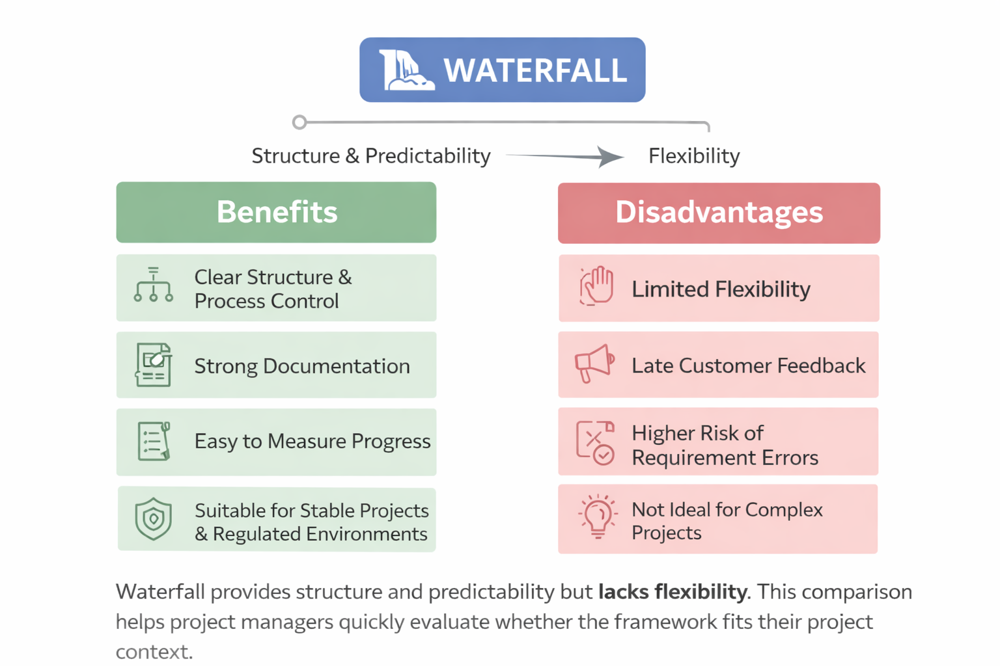

Understanding when Waterfall works best — and when its rigidity becomes a risk.
Even in Agile environments, understanding Waterfall helps you evaluate project contexts, communicate with stakeholders who come from traditional backgrounds, and make informed decisions about when hybrid approaches might be valuable.

Each phase has defined inputs, outputs, and approval steps.
Detailed documentation makes knowledge transfer and compliance easier.
Milestones make tracking project status straightforward.
Works well when requirements are unlikely to change.
Ideal for industries requiring formal approvals and documentation (e.g., government, healthcare).
Changes are difficult and expensive once development begins.
Users often see the final product only near the end of the project.
Mistakes in requirements may only appear during testing.
When requirements evolve, Waterfall becomes inefficient.